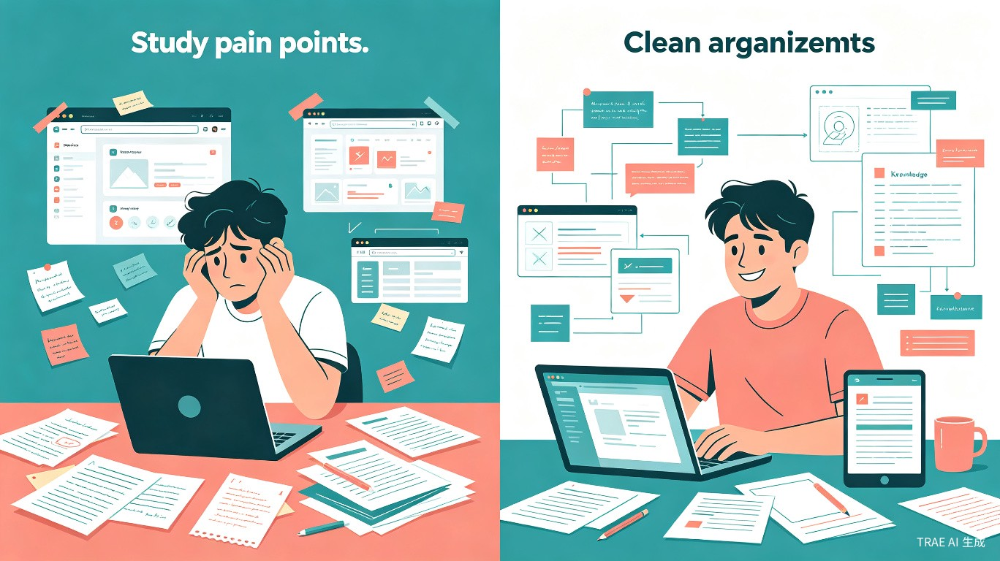
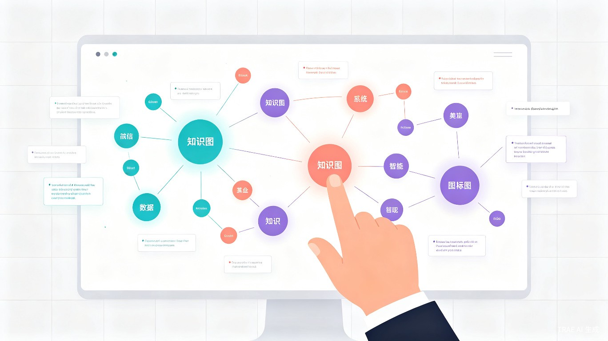
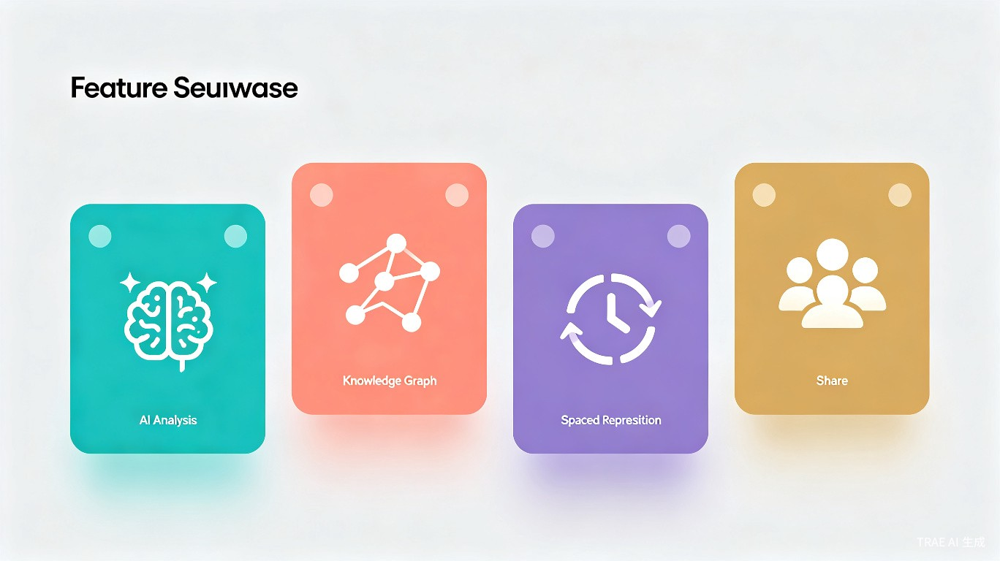
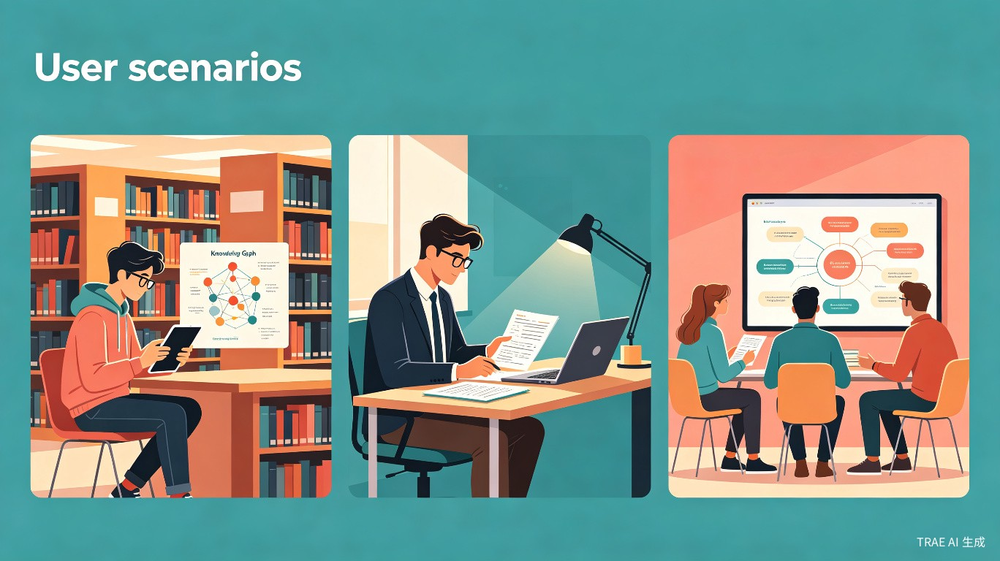

知脉 KnowPulse
AI 驱动的智能学习笔记与知识图谱应用 —— 让碎片化知识自动生长为结构化智慧，让每一次学习都有迹可循
发现痛点，重新定义学习方式
在信息爆炸的时代，学习者每天都在面对海量的知识输入——课堂笔记、网课截图、论文文献、技术文档……然而，记下来的知识往往变成沉睡的碎片，复习时找不到重点，学过的内容过目即忘，知识之间缺乏关联，难以形成体系化的理解。
😵 现有痛点
笔记散落在各处，无法统一管理；复习时需要翻阅大量资料，效率低下；知识点之间缺乏关联，难以构建知识体系；遗忘曲线导致大量重复学习。
💡 我们的方案
知脉 KnowPulse 通过 AI 自动分析学习内容，提取关键知识点并生成可视化知识图谱，结合科学间隔重复算法，帮助用户高效巩固记忆，实现知识的体系化沉淀。

一款懂你的智能学习助手
知脉 KnowPulse 是一款跨平台智能学习应用（支持 Web、小程序、桌面客户端），核心产品形态为「AI笔记 + 知识图谱 + 间隔复习」三位一体的学习管理系统。用户只需正常记录学习内容，AI 便会在后台自动完成知识提取、关联分析和图谱构建。

四大核心能力，覆盖学习全链路
AI 智能笔记分析
支持文本、图片、PDF、语音等多种输入方式，AI 自动提取关键概念、定义、公式和核心论点，生成结构化摘要，让每一条笔记都成为可检索、可关联的知识单元。
动态知识图谱
基于 AI 语义分析，自动构建知识点之间的关联关系，生成可交互的二维/三维知识图谱。用户可自由拖拽、缩放、添加自定义关联，直观掌握知识全貌。
科学间隔复习
内置基于艾宾浩斯遗忘曲线优化的间隔重复算法，根据用户对每个知识点的掌握程度动态调整复习计划，在最佳时间点推送复习提醒，用最少的时间实现最大的记忆保持。
协作知识共享
支持学习小组共同维护知识图谱，成员可贡献笔记、评论知识点、分享学习路径。通过社区机制，让优质知识体系在学习者之间流动，实现「一人整理，全组受益」。

为每一位终身学习者而设计
大学生
面对多门课程、海量文献和考试压力，需要高效整理课堂笔记、构建学科知识体系、科学安排复习计划。
职场新人
入职后需要快速学习大量业务知识、技术文档和行业规范，希望将碎片化学习内容转化为可复用的知识资产。
考证/自学者
备考各类职业资格认证或自学新技能，需要系统化的知识管理和科学的复习策略来提高通过率和学习效果。

从效率到公平，重新定义知识管理
📈 效率提升价值
通过 AI 自动化知识整理和科学间隔复习，用户可节省约 60% 的复习时间。知识图谱让信息检索速度提升 3 倍以上，彻底告别「翻箱倒柜找笔记」的低效模式。对于备考学生而言，系统化的知识管理意味着更高的考试通过率和更短的学习周期。
🌱 社会价值
协作知识共享功能让优质学习资源得以在群体中流动，缩小不同地区、不同背景学习者之间的知识获取差距。通过社区共建知识图谱，实现教育资源的普惠共享，助力构建学习型社会。同时，AI 辅助学习可以降低认知负担，让学习障碍群体也能更轻松地获取和整理知识。
从 MVP 到生态，清晰的产品演进路径
Phase 1：核心功能 MVP（第 1-3 个月）
上线 Web 端核心功能，包括 AI 笔记分析、基础知识图谱生成、间隔复习提醒。支持文本和图片输入，覆盖单用户核心学习场景。
Phase 2：多端协同与社区（第 4-6 个月）
推出小程序和桌面客户端，实现多端数据同步。上线协作学习功能，支持学习小组共建知识图谱，引入社区优质知识模板市场。
Phase 3：AI 深度与生态开放（第 7-12 个月）
接入大语言模型实现深度知识问答和个性化学习路径推荐。开放 API 供第三方教育平台集成，构建「知脉」学习生态。
让每一次学习，都有迹可循
知脉 KnowPulse —— 不只是记笔记，更是构建你的知识宇宙
了解详情